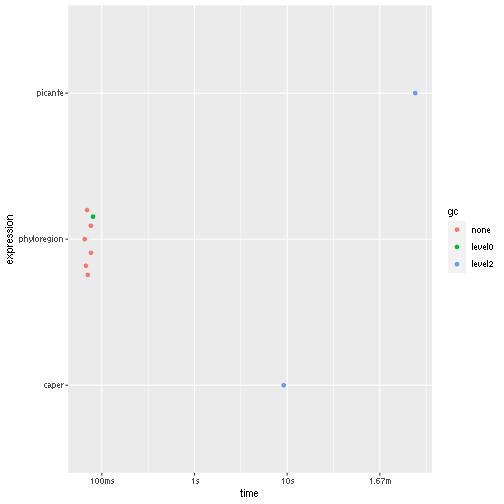

vignettes/ed.Rmd
ed.RmdEvolutionary distinctiveness is a metric that quantifies how isolated a species is on a phylogenetic tree – some species have few or no close living relatives.
The standard method for calculating evolutionary distinctiveness is
either by using the R packages picante or
caper. For very large trees, such calculation is a
memory-intensive operation and a bottle-neck for these algorithms.
Because of these challenges, we developed a new method in our
phyloregion package that speeds up the process
significantly to produce results in seconds! See how:
Let’s try computing evolutionary distinctiveness for a tree with 5,000 species:
library(ape)
library(ggplot2)
# packages we benchmark
library(phyloregion)
library(picante)
library(caper)
tree <- ape::rcoal(5000)
ed_picante <- function(x) picante::evol.distinct(x, type="fair.proportion")
ed_caper <- function(x) caper::ed.calc(x)
ed_phyloregion <- function(x) phyloregion::evol_distinct(x, type="fair.proportion")
res <- bench::mark(picante=ed_picante(tree),
caper=ed_caper(tree),
phyloregion=ed_phyloregion(tree), check=FALSE)
summary(res)## # A tibble: 3 × 6
## expression min median `itr/sec` mem_alloc `gc/sec`
## <bch:expr> <bch:tm> <bch:tm> <dbl> <bch:byt> <dbl>
## 1 picante 4.02m 4.02m 0.00415 NA 18.9
## 2 caper 9.17s 9.17s 0.109 NA 5.45
## 3 phyloregion 65.3ms 70.56ms 13.9 NA 1.98
autoplot(res)
Here, phyloregion is several orders of magnitude faster and
efficient in memory allocation than the other packages.
The function in phyloreegion is called
evol_distinct and it is used as follows:
evol_distinct(tree, type = c("equal.splits", "fair.proportion"), ...)If you find this vignette tutorial useful, please cite in publications as:
Daru, B.H., Karunarathne, P. & Schliep, K. (2020) phyloregion: R package for biogeographic regionalization and macroecology. Methods in Ecology and Evolution 11: 1483-1491. doi: 10.1111/2041-210X.13478.